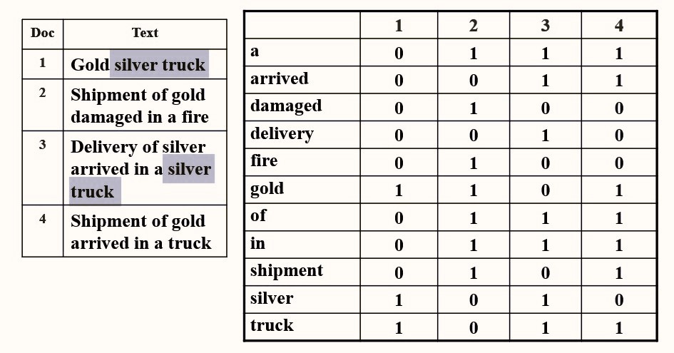

Chapter4 Inverted File Index 倒排索引
4.1 问题引入
如何找到含有目标关键词的网页？
思路一： 遍历所有网页
思路二： 相关发生矩阵（Term-Document Incidence Matrix）

例如：要查询“silver truck”，我们可以分别对“silver”和“truck”进行查询，其分别出现在第1、3个文档和第1、3、4个文档，因此取交集，最终查询得到第1、3个文档。
$$silver\& truck=1010\&1011=1010$$
潜在问题：
如果某个文档含有“silver”和“truck”，但二者并无关联，或者先后顺序调换，则这个文档并不是我们的目标，但也会被检索到。虽然如此，过去许多的浏览器选择忽略这个问题，将文本看作单词的集合而不是序列（词袋假设）。
矩阵过于庞大，不仅是单词的维度上，还是网页的维度上。
思路三： 倒排索引（Inverted File Index）
4.2 倒排索引
称为“倒排”的原因：文档包含哪些单词→单词属于哪些文档（行与列的互换）
改进：对于某个单词和某个包含该单词的文档，我们还在后面列举其出现在文档中的位置。

Note
标注每个单词频率（一个单词出现在几个文档中）的原因：
便于加快取交集的过程。例如，要查询的一段文字中含有许多单词，那么需要进行很多次取交集。如果我们从频率低的单词开始取交集，则可以很快排除大量的情况，加快取交集的过程。
词干提取（Word Stemming）：
将一个单词还原为其词干。
例如：Process，processing，processes，processed都应被还原为process。
停用词（Stop Words）：
例如a，the，it等，这些单词出现的频率过高，不适合用于倒排索引。
索引结构：
- 搜索树
- 哈希表
优劣比较：
对于单次查询，哈希表只需要常数时间，而搜索树的查询时间与单词长度有关；
而对于顺序查询，由于搜索树的相邻单词具有相关性，因此更有利。
分布式索引（Distributed Indexing）：
当单词和文档数量过多时采用的解决方法。
- Term-partitioned Index 按照单词首字母来进行划分，如$A\sim C$，$D\sim F$，···，$X\sim Z$等，$A\sim C$服务器中存储的为以$A\sim C$为首字母的单词的倒排表。
- Document-partitioned Index 按照文档编号进行划分，如$1\sim 10000$，$10001\sim 20000$，···，$90001\sim 100000$等，$1\sim 10000$服务器中存储的为第$1$到$10000$号的文档对应的倒排表。
在现实生活中，按照文档编号划分更加常用。因为服务器都面临的崩溃的危险，如果按照首字母划分，假如$A\sim C$服务器崩溃，那么查询所有对应单词都没有返回结果；但是如果按照文档编号划分，假如$1\sim 10000$服务器崩溃，那么我只是少掉了这$10000$个可搜索的文档，这在庞大的文档集合中是影响不大的，至少能有返回结果。
动态索引（Dynamic Indexing）：
若有新加入的文件：
对于已在词典的单词，更新其信息；对于不在词典的单词，新添加至词典。
我们常常将新加入的文件放入辅助索引（auxiliary index） 中，其一般比较小；而原本的文件都放在主索引（Main Index） 中，其一般比较大。当要进行搜索时，同时会对主索引和辅助索引进行搜索。每隔一段时间，会将辅助索引的内容合并到主索引中。
若有待删除的文件：
并不实际删除，而是打上标记，使得后续搜索不会将其作为结果。
压缩（Compression）：
-
删去停用词；
-
当文件很多时，其编号过大，因此可以考虑用较小的相对索引代替较大的绝对索引。
阈值化（Thresholding）：
返回结果层面：
对于一次查询，其结果数量可能十分庞大，因此需要限制返回结果的数量。
- 对于布尔查询无效（例如(
A AND B) OR (C AND (NOT D))表示含有A和B，或者含有C且不含有D的文档），因为其数量庞大，结果复杂，很难保证限制得到的结果最优 - 截断也会导致一些真正重要的文档被忽略
Note
网页排序：
由于网页之间有超链接的存在，因此以网页为节点，超链接为有向边，可以画出一张有向图。如果一个重要的网页有指向另一个网页的超链接，则我们可以认为另一个网页也是重要的，因此提高其排名。
例如网页$A$同时被网页$B$和网页$C$超链接，但是$B$使用的超链接只指向$A$，而$C$使用的超链接除了$A$以外还指向了许多其他的网页，那么$B$的重要程度对$A$的影响就会比$C$更大。
输入信息层面：
按照频率对查询词进行排序，更重视频率低的单词。
评估：
-
建立倒排表的速度
-
搜索的速度
-
搜索结果的好坏
| $~$ | Relevant（相关） | Irrelevant（不相关） |
|---|---|---|
| Retrieved（搜索到） | $R_R$ | $I_R$ |
| Not Retrieved（未搜索到） | $R_N$ | $I_N$ |
准确率（Precision）：$P=\frac{R_R}{R_R+I_R}$
召回率（Recall）：$R=\frac{R_R}{R_R+R_N}$
准确率和召回率往往只能二者取其一。